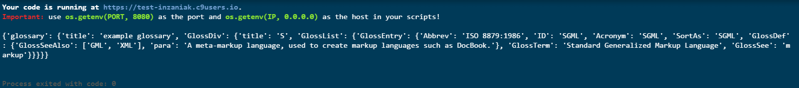

One of the most used format these days (especially online) is the Javascript Object Notation (JSON). At first sight it can be a little confusing, but after using it a few times it won't be a problem anymore.
So what's the best way to read Json in Python?
Luckily for you (and me) there is an awesome library integrated within Python named "json".
Let's start with a Json available on http://json.org/example.html:
{
"glossary": {
"title": "example glossary",
"GlossDiv": {
"title": "S",
"GlossList": {
"GlossEntry": {
"ID": "SGML",
"SortAs": "SGML",
"GlossTerm": "Standard Generalized Markup Language",
"Acronym": "SGML",
"Abbrev": "ISO 8879:1986",
"GlossDef": {
"para": "A meta-markup language, used to create markup languages such as DocBook.",
"GlossSeeAlso": ["GML", "XML"]
},
"GlossSee": "markup"
}
}
}
}
}
There are a few tools that help you format and read Json, these are the ones i use often:
-
http://jsonviewer.stack.hu: This is a really awesome site which helps you understand the content of the Json
-
atom.io: An awesome text editor that supports a lot of extension. I really suggest you to take a look at it
So let's take a look at this Json structure on Jsonviewer:

Now, what are the first steps to import this data structure into our python script?
import json
json_string = """
{
"glossary": {
"title": "example glossary",
"GlossDiv": {
"title": "S",
"GlossList": {
"GlossEntry": {
"ID": "SGML",
"SortAs": "SGML",
"GlossTerm": "Standard Generalized Markup Language",
"Acronym": "SGML",
"Abbrev": "ISO 8879:1986",
"GlossDef": {
"para": "A meta-markup language, used to create markup languages such as DocBook.",
"GlossSeeAlso": ["GML", "XML"]
},
"GlossSee": "markup"
}
}
}
}
}
"""
my_json = json.loads(json_string)
print(my_json)
The first step is to import the library we are going to use: "json". Then we create a string which contains the Json we are going to read. Now that we have our Json we load it into a variable by using
json.loads() and print the result:

We can see that the Json we loaded is outputted as a python Dict, which is convenient for us.
To navigate it you just need to use the syntax you'll use with a Dict:
print(my_json['glossary']['title'])
# returns: example glossary
print(my_json['glossary']['GlossDiv'])
# returns: a dict
That's pretty awesome right? But what if i need to output the json as is? There is a simple method in the json library named
dumps() that does just what we need:
print(json.dumps(my_json))
>>{"glossary": {"title": "example glossary", "GlossDiv": {"title": "S", "GlossList": {"GlossEntry": {"ID": "SGML", "GlossTerm": "Standard Generalized Markup Language", "Acronym": "SGML", "GlossSee": "markup", "SortAs": "SGML", "Abbrev": "ISO 8879:1986", "GlossDef": {"GlossSeeAlso": ["GML", "XML"], "para": "A meta-markup language, used to create markup languages such as DocBook."}}}}}}
I think that's all for this session! Thanks for reading.

 Direct Link:
Direct Link: